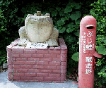

|
私も入っています。。 全国かえる奉賛会  全国かえる奉賛会に入会するには、自分のホームページに、上のバナーを貼り付けるだけ。どんどん入会しましょー。大王様に会うには、上の絵をクリック。ずずっと奥に写真館があるぞ。 |
|
【かえる古新聞】
|
| 【カエル日記】 ６月２２日◆えらいぞ。同僚のカエル娘は、また怪しいひきがえるグッズを手に入れて、机の上に転がしている。部長に『机の上がかえるだらけやんか。なんとかしろー』と、とほほほほ。。と愚痴こぼされているが、そんなのおかまいなしだぜーげこげこ（げ） |
|
【カエル速報】 1.カエルグッズ 2.カエルリンク 3.国家健全化計画 4.謎の髭男 5.とっくりくん 6.街頭で見た蛙 7.カエルショップ 8.奉納カエル絵馬 9.カエル・コスプレ 10.カエルな表紙 |
| 大王様へのメール |
奉賛会推薦菓子
かえる饅頭 この欄に紹介するカエル物品や書籍について情報を待ってます。みんなで掘り起こそう、カエル土産。かえる産品を奨励しよう！使うほど安く良くなるカエル品 |
|
|
全県で無事カエル量産体制確立か
|
 |
|
|
背後にカエル量産工場の存在も！
【福岡発=聖楼堂本舗さま発】それと馬鹿でっかい蛙様をおいてある工房らしきものは、山川町に存在しておりますが、さすがに「撮らせてください〜」とは言いにくくて、写真は撮影していません。次回チャンスにはお願いします知覧特攻記念館前でも確認
【げこげこ大王７世発】同一のカエルは、今から５年前、げこげこ大王が知覧特攻記念館に行ったときに、『無事カエル』を記念館前で発見して、無事に帰宅できるよう献金したうえに写真撮影していたのである。聖楼堂本舗さまの報告により、同じカエルが鹿児島県下各地に広く分布していることが分かってきた。鹿児島県にひそかに展開する『無事カエル』。県内のどこかにカエル秘密生産工場があるらしい。それにしても、この献金は、どのように使われるのであろうか。鹿児島県人からの関連情報を待つぞー！！カエルなら、なにをしても許されるので、まー可愛いのでよいのである(笑)
待望！印南町がインターネット進出
【和歌山発=印南町産業課古山さま発】本日（６月１７日）、インターネットを接続いたしました。カエルページを見ました。今後もカエルでがんばって下さい。=待ち望んでいた印南町がついにインターネットにやってきたぞ。さーページができたら、ただちにブックマークつけようね。アドレス公開を待つ！！表紙はやっぱり、カエル大橋だよね。。